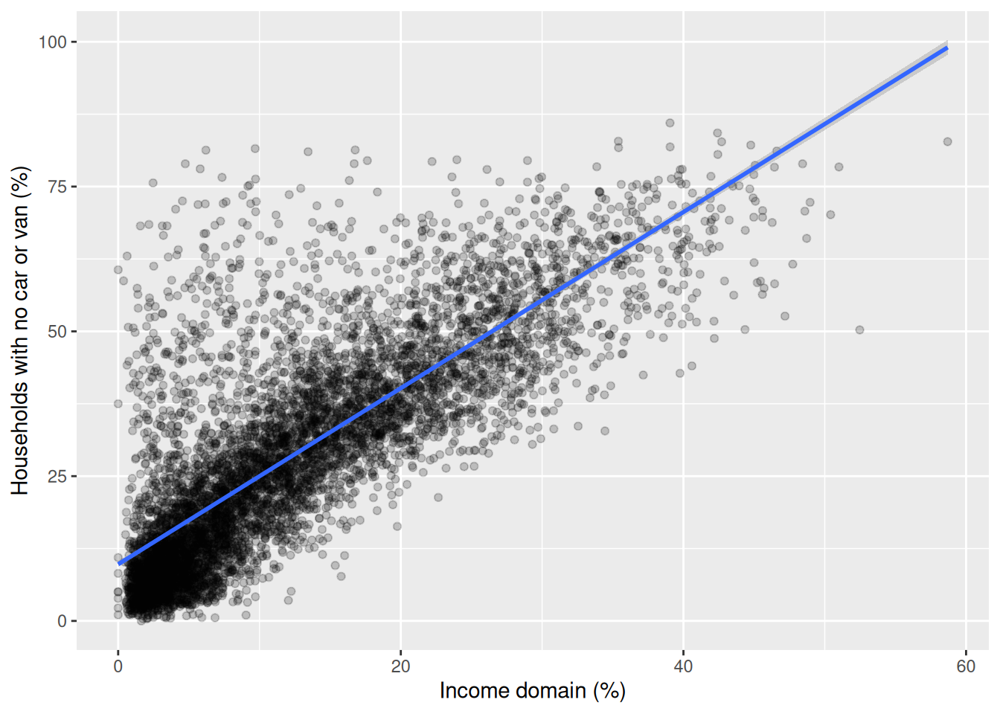
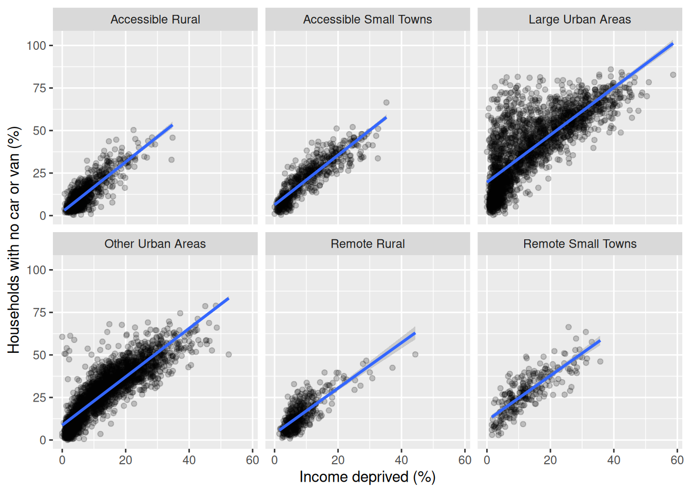

download.file("https://www.gov.scot/binaries/content/documents/govscot/publications/statistics/2020/01/scottish-index-of-multiple-deprivation-2020-indicator-data/documents/simd_2020_indicators/simd_2020_indicators/govscot%3Adocument/SIMD%2B2020v2%2B-%2Bindicators.xlsx",
"data/simd2020_indicators.xlsx", mode = "wb")
download.file("https://www.gov.scot/binaries/content/documents/govscot/publications/statistics/2020/01/scottish-index-of-multiple-deprivation-2020-data-zone-look-up-file/documents/scottish-index-of-multiple-deprivation-data-zone-look-up/scottish-index-of-multiple-deprivation-data-zone-look-up/govscot%3Adocument/SIMD%2B2020v2%2B-%2Bdatazone%2Blookup%2B-%2Bupdated%2B2025.xlsx",
"data/simd_datazone_lookup.xlsx", mode = "wb")
download.file("https://www.scotlandscensus.gov.uk/media/zz8620250217zjs8/SNS%20Data%20Zone%202011%20blk.zip",
"data/census_2011_data_zones.zip", mode = "wb")
unzip("data/census_2011_data_zones.zip", files = c("KS404SC.csv", "KS105SC.csv"), exdir = "data")Say we were interested in relationship between areas defined as deprived on the SIMD income domain and whether they are more likely to include households without a car / van.
We could combine the SIMD and Consesus data for that. (Note, we are using 2011 rather than 2022 just as it is slightly easier to work with. If I find time, I’ll add code for extra step needed for 2022 data at the end.)
Lets grab our data - this time also using code to grab files from the zip files:
- SIMD indicators with with one per data zone. Income domain is based on % receiving certain benefits.
- SIMD data zone lookup includes URname with urban/rual classifications (peeople in rural areas may be more likely to own vehicle)
- census KS404SC includes car/van ownership / available for use by one or more household members
- KS105SC is household composition
(If downloads timeout, then run options(timeout = 600) and try the downloads that failed again.)
Load our packages (installing any if needed):
Read in our data and select our variables of interest:
simd_ind <- read_excel("data/simd2020_indicators.xlsx", sheet = "Data", na = "*") |>
clean_names()
simd_zones <- read_excel("data/simd_datazone_lookup.xlsx", sheet = "SIMD 2020v2 DZ lookup data") |>
clean_names() |>
select(data_zone = dz, zone_name = d_zname, urban_rural = u_rname)
cars <- read_csv("data/KS404SC.csv") |>
clean_names() |>
select(data_zone = x1, households = all_households,
no_car = number_of_cars_or_vans_in_household_no_cars_or_vans)
household_types <- read_csv("data/KS105SC.csv") |>
clean_names() |>
select(data_zone = x1, one_person_65 = one_person_household_aged_65_and_over,
one_person_under65 = one_person_household_aged_under_65,
all_student = other_households_all_full_time_students)Link all the files:
Some more wrangling to create various %s:
cars_simd <- cars_simd |>
mutate(no_car_pct = no_car / households * 100,
income_pct = income_count / total_population * 100,
one_person_pct = (one_person_65 + one_person_under65) / households * 100,
all_student_pct = all_student / households * 100) |>
select(data_zone, zone_name, council_area, no_car_pct, income_pct, urban_rural, one_person_pct, all_student_pct) |>
drop_na(income_pct)Quick scattersplot:
ggplot(cars_simd, aes(x = income_pct, y = no_car_pct)) +
geom_point(alpha = 0.2) +
geom_smooth(method = "lm") +
labs(x = "Income domain (%)", y = "Households with no car or van (%)")
(We use alpha here just to make the dots slightly easier to read given number + clustering)
Can also do similar for each rural/urban area type:
ggplot(cars_simd, aes(x = income_pct, y = no_car_pct)) +
geom_point(alpha = 0.2) +
geom_smooth(method = "lm") +
facet_wrap(~ urban_rural) +
labs(x = "Income deprived (%)", y = "Households with no car or van (%)")
-
facet_wrap()is doing the hard work for us here, creating facets of the plot based on theurban_ruralvariable.
Some descriptive stats:
labs <- data.frame(
no_car_pct = "Households with no car or van (%)",
income_pct = "Income deprived (%)",
one_person_pct = "One-person households (%)",
all_student_pct = "All-student households (%)",
urban_rural = "Urban rural class")
sumtable(cars_simd, labels = labs)| Variable | N | Mean | Std. Dev. | Min | Pctl. 25 | Pctl. 75 | Max |
|---|---|---|---|---|---|---|---|
| Households with no car or van (%) | 6973 | 28 | 18 | 0 | 12 | 41 | 86 |
| Income deprived (%) | 6973 | 12 | 9.6 | 0 | 4.5 | 18 | 59 |
| Urban rural class | 6973 | ||||||
| ... Accessible Rural | 774 | 11% | |||||
| ... Accessible Small Towns | 609 | 9% | |||||
| ... Large Urban Areas | 2291 | 33% | |||||
| ... Other Urban Areas | 2615 | 38% | |||||
| ... Remote Rural | 427 | 6% | |||||
| ... Remote Small Towns | 257 | 4% | |||||
| One-person households (%) | 6973 | 33 | 12 | 1.3 | 25 | 40 | 82 |
| All-student households (%) | 6973 | 0.79 | 3.4 | 0 | 0 | 0.19 | 63 |
Three example models:
Call:
lm(formula = no_car_pct ~ income_pct + urban_rural + one_person_pct,
data = cars_simd)
Residuals:
Min 1Q Median 3Q Max
-29.144 -4.157 -0.541 3.288 58.440
Coefficients:
Estimate Std. Error t value Pr(>|t|)
(Intercept) -11.128133 0.328181 -33.909 < 2e-16 ***
income_pct 1.021351 0.010639 96.003 < 2e-16 ***
urban_ruralAccessible Small Towns 3.318608 0.387398 8.566 < 2e-16 ***
urban_ruralLarge Urban Areas 11.962075 0.309585 38.639 < 2e-16 ***
urban_ruralOther Urban Areas 5.314106 0.297224 17.879 < 2e-16 ***
urban_ruralRemote Rural -2.051474 0.431417 -4.755 2.02e-06 ***
urban_ruralRemote Small Towns 3.984387 0.518149 7.690 1.68e-14 ***
one_person_pct 0.632034 0.008888 71.110 < 2e-16 ***
---
Signif. codes: 0 '***' 0.001 '**' 0.01 '*' 0.05 '.' 0.1 ' ' 1
Residual standard error: 7.13 on 6965 degrees of freedom
Multiple R-squared: 0.8496, Adjusted R-squared: 0.8494
F-statistic: 5619 on 7 and 6965 DF, p-value: < 2.2e-16modelsummary(list("Model 1" = model_simp, "Model 2" = model_mult1, "Model 3" = model_mult2),
coef_map = c("income_pct" = "Income domain (%)",
"urban_ruralLarge Urban Areas" = "Large urban areas",
"urban_ruralOther Urban Areas" = "Other urban areas",
"urban_ruralAccessible Small Towns" = "Accessible small towns",
"urban_ruralRemote Small Towns" = "Remote small towns",
"urban_ruralRemote Rural" = "Remote rural",
"one_person_pct" = "One-person households (%)",
"(Intercept)" = "Constant"),
gof_map = c("nobs", "r.squared", "adj.r.squared", "rmse", "F"),
stars = TRUE)| Model 1 | Model 2 | Model 3 | |
|---|---|---|---|
| + p < 0.1, * p < 0.05, ** p < 0.01, *** p < 0.001 | |||
| Income domain (%) | 1.521*** | 1.407*** | 1.021*** |
| (0.014) | (0.012) | (0.011) | |
| Large urban areas | 16.761*** | 11.962*** | |
| (0.397) | (0.310) | ||
| Other urban areas | 6.293*** | 5.314*** | |
| (0.390) | (0.297) | ||
| Accessible small towns | 4.289*** | 3.319*** | |
| (0.509) | (0.387) | ||
| Remote small towns | 7.707*** | 3.984*** | |
| (0.677) | (0.518) | ||
| Remote rural | 0.541 | -2.051*** | |
| (0.565) | (0.431) | ||
| One-person households (%) | 0.632*** | ||
| (0.009) | |||
| Constant | 9.783*** | 2.620*** | -11.128*** |
| (0.217) | (0.348) | (0.328) | |
| Num.Obs. | 6973 | 6973 | 6973 |
| R2 | 0.632 | 0.740 | 0.850 |
| R2 Adj. | 0.632 | 0.740 | 0.849 |
| RMSE | 11.14 | 9.36 | 7.13 |
| F | 11978.181 | 3310.074 | 5618.715 |
-
plot()lets us quickly pick residual checks